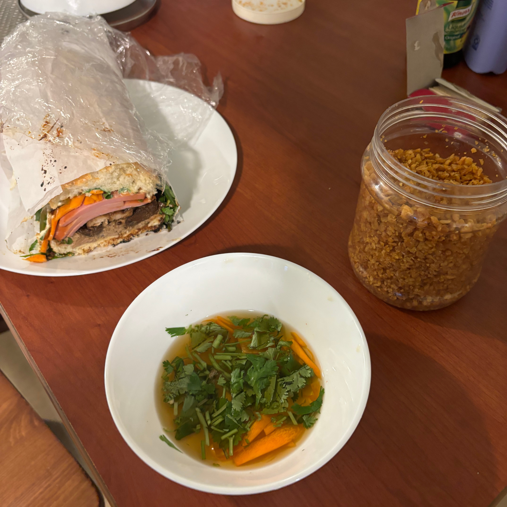

Banh Mi
I made every part of this sandwich from scratch (kinda).
Id say this is sort of my magnum opus as it combines offal (organs), pickling,
bread making, charcuterie, and a lot of prep. Prep and mise en place
are quite literally everything when it comes to cooking. Alot of the
stuff people eat in upscale and fine dining are actually less fresh and made to order
than all home cooked meals. Long story short, if you're cooking it at home it's fresh but
if its made in a restaurant it isn't, most people wont bat an eye anyways.